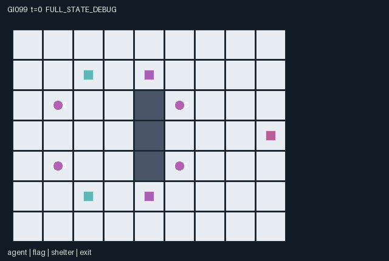

GI099 / SPATIAL
灯火庭院
守卫追逐持旗信使；标记使对手冻结掉旗，邻近队友可救援并给予短时保护。
Original saved demonstration
Recorded native state, often authored scripts or interventions; information scope and failures are preserved in the original provenance. This is a saved demonstration, not live browser play.

Release verification episode
Untrained uniform legal actions. Actual JAX state sampled along the full original episode; full-state debug camera. No human performance or learning claim.

Run this game
crucibles play --game 99
Start Python locally, then open the address printed by the terminal. Installation, multiplayer, takeover and keyboard controls →
Objective, rewards & ending
Exact task contract
{
"objective": "Wardens aim to immobilize every courier still inside. Couriers aim to get both pennants out, one carried pennant per escaping courier, while keeping their partner available for rescue.",
"natural_termination": "Both couriers escaped, or every nonescaped courier is currently frozen. If one has escaped and the other is tagged, the wardens end the remaining chase. Otherwise truncate at 96 steps. Frozen timers last at most six steps without retagging; an episode can end earlier. Terminal raw state is absorbing.",
"interaction": "Workers occupy a courtyard with two routes around a wall. Tagging drops carried cargo and removes the target's next actions. A nearby courier can free the partner with grace before the tag phase. Both couriers draw from the same regenerating shelter charges; wardens can seal those physical shelters. Exiting removes a possible rescuer while also securing a payoff.",
"observation_access": "Same-team workers are always radio-visible. Opponents are visible only within Manhattan distance three; walls do not block this proximity sensor. Pennants are visible within the same radius or when carried by a teammate; delivered pennants are inactive. The static map, shelters, exit, shelter resources and identity-only event announcements are public. Hidden worker and pennant coordinates and attributes are masked exactly as listed; the renderer must honor agent_vis and flag_vis."
}Declared per-step reward bounds: -16 to 16. Observability: partially_observable.
Rules
- Two wardens pursue two pennant-carrying couriers around a central wall.
- Tagging an adjacent unprotected courier freezes them and drops their pennant.
- An adjacent teammate can rescue a frozen courier, granting temporary protection.
- Couriers must spend finite shelter charges for cover; wardens can seal shelters.
- Couriers share radio positions. Opponents and loose pennants are sensed only nearby.
- An escaped courier cannot return to rescue. The chase ends when both escape or every remaining courier is frozen.
Original mechanism document (historical status wording retained)
# Lantern Courtyard — game-v3-00099
Two controlled wardens (roles 0 and 1) and two controlled couriers (roles 2 and 3) occupy a 9 by 7 courtyard. A three-cell central wall separates upper and lower approaches. Couriers must collect the two pennants and each exit with one at (8,3). Wardens seek to freeze every courier still inside. Both teams' actions affect the other side's future action set and opportunities.
## Transition order and role actions
Actions 0–4 wait or move. Input-frozen or escaped roles have only wait. Movement is followed by warden shelter seals, courier cover expenditure, courier interaction, then warden tagging. Finally carried pennants follow their actual carriers, termination is determined, and visibility is recomputed.
For a warden, action 5 tags the nearest eligible courier at Manhattan distance at most one; equal distances choose the lower courier index. A courier is eligible only when not escaped, not already frozen, without rescue grace and without cover. Tagging freezes them for six ticks, drops any carried pennant at their current cell and clears their inventory. Timers decline once per call; a courier frozen at input cannot act on the call that brings its timer to zero. Retagging after release is possible.
For a courier, action 5 first rescues an adjacent frozen teammate; otherwise it exits while at the gate with a pennant, or picks a loose pennant on its own cell when empty-handed. Rescue clears the teammate's freeze timer and grants grace two, protecting that transition and the following transition. The rescued player does not gain an extra same-tick action. Escape makes the pennant inactive and leaves the escaped worker visible as an inert role; it no longer blocks movement and cannot rescue.
Action 6 seals a shelter for a warden within distance one, or spends one cover charge for a courier standing exactly on an unsealed shelter. Wardens' seals take precedence that tick. Cover lasts only for the current tag phase; the level is visible in the resulting state. Each shelter starts with four charges. Every sixth tick it regains one, capped at four, only if it was unsealed at input. Cover therefore creates shared resource and timing dependence.
The natural endings are both couriers escaped, or every courier that has not escaped is frozen. The latter can occur before the six-tick timers expire; if one courier already exited, tagging the other ends the remaining chase. Otherwise the horizon is 96. This is a team contest with possible mixed earlier escapes, not an assertion that either side has a winning strategy.
## Payoffs, information and partner dependence
Each successful tag pays its warden two and penalizes its target two. A rescue pays one to the rescuer and one to the rescued courier. Each escape pays its courier five, the other courier two, and costs each warden two. A joint escape adds three to both couriers and subtracts three from both wardens. A capture ending does the reverse. Those integer event payoffs are the returned rewards; there is no measured outcome in this document.
Teammate positions and status are always radio-visible. Enemy workers are visible only within Manhattan distance three; walls do not occlude this proximity sensor. Loose pennants use that radius; a teammate-carried pennant is visible to its team. Delivered pennants are inactive. Hidden coordinates and attributes are masked, with explicit visibility bits. The public map, shelters and their resource levels, gate, and identity-only event announcements remain available to all roles. Public resource changes can themselves support inference; no additional secret positional feed is provided to the role renderer.
A courier can divert a warden so a partner crosses, spend a shared charge, return to rescue, or escape early and remove the team's remaining rescue option. Wardens can split approaches, coordinate a freeze window, or spend a turn sealing cover while the other tags. These alternatives depend on partners' timing and opponents' actions. The proposed paired scripts separately vary a warden's tag and a courier's rescue; their predicted mask, cargo and protection differences await real execution.
## Declared invariants and prospective variations
The two wardens never acquire pennants or become frozen. A courier carries at most one pennant; an active carried pennant has exactly one courier owner. Frozen timers remain in [0,6], grace in [0,2], charges in [0,4] and seals in [0,3]. Escaped courier positions may overlap later entrants at the gate because they are nonblocking; unique active positions are deliberately not asserted for that group. All physical positions remain in map bounds.
Prospective variants could change wall gaps, shelter placement and regeneration, sensing radius, team composition or the rule for leaving a partner behind. None is sampled or evaluated here.
## Literal source evidence
**Actual proximity and teammate visibility**
```python
L16: n["agent_vis"] = (teams[:, None] == teams[None, :]) | (distance <= 3)
L17: flag_distance = jnp.sum(jnp.abs(s["agent_pos"][:, None, :] - s["flag_pos"][None, :, :]), axis=2, dtype=jnp.int32)
L18: carrier_team = teams[jnp.clip(s["flag_owner"], 0, 3)]
L19: friendly_carrier = (s["flag_owner"][None, :] >= 0) & (teams[:, None] == carrier_team[None, :])
L20: n["flag_vis"] = ((flag_distance <= 3) | friendly_carrier) & s["flag_active"][None, :]
```
**Inactive-role action mask**
```python
L89: able = (s["frozen"] == 0) & ~s["escaped"] & ~s["done"]
L90: return able[:, None] | (jnp.arange(7)[None, :] == 0)
```
**Rescue changes partner state**
```python
L153: rescue = act & adjacent & (q["frozen"][mate] > 0) & ~q["escaped"][mate]
L154: q["frozen"] = q["frozen"].at[mate].set(jnp.where(rescue, 0, q["frozen"][mate]))
L155: q["grace"] = q["grace"].at[mate].set(jnp.where(rescue, 2, q["grace"][mate]))
L156: q["rescue_event"] = q["rescue_event"].at[mate].set(q["rescue_event"][mate] | rescue)
L157: credit = credit.at[i].add(rescue.astype(jnp.int32))
```
**Tag removes opportunities and drops cargo**
```python
L182: hit = (a[i] == 5) & jnp.any(candidates)
L183: q["frozen"] = q["frozen"].at[target].set(jnp.where(hit, 6, q["frozen"][target]))
L184: q["tag_event"] = q["tag_event"].at[target].set(q["tag_event"][target] | hit)
L185: credit = credit.at[i].add(hit.astype(jnp.int32))
L186: dropped = (q["flag_owner"] == target) & hit
L187: q["flag_pos"] = jnp.where(dropped[:, None], q["agent_pos"][target], q["flag_pos"])
L188: q["flag_owner"] = jnp.where(dropped, -1, q["flag_owner"])
L189: q["carrying"] = q["carrying"].at[target].set(jnp.where(hit, -1, q["carrying"][target]))
L190: return q, credit
```
**Natural contest ending**
```python
L195: all_escaped = jnp.all(n["escaped"][2:])
L196: caught = jnp.all(n["escaped"][2:] | (n["frozen"][2:] > 0)) & ~all_escaped
L197: n["t"] = s["t"] + 1
L198: n["terminated"] = all_escaped | caught
L199: n["truncated"] = (n["t"] >= self.max_steps) & ~n["terminated"]
L200: n["done"] = n["terminated"] | n["truncated"]
```
**Absorbing raw state**
```python
L212: next_state = jax.tree.map(lambda old, new: jnp.where(state["done"], old, new), state, proposed)
L213: rewards = jnp.where(state["done"], jnp.zeros((4,), dtype=jnp.float32), rewards)
L214: dones = jnp.full((4,), next_state["done"], dtype=jnp.bool_)
L215: info = {"done_all": next_state["done"], "terminated": next_state["terminated"],
L216: "truncated": next_state["truncated"]}
```
## Author boundary and provenance
This package is authored, frozen and **not executed**. Only the assigned batch's eight design/request files, delivery requirements, six contract/interface files and five supplied official reference files were inputs. There was no candidate import, JAX/NumPy import, compiler, contract validator, simulator, training, SSH or network operation. The only local source check is Python AST parsing; JSON parsing and SHA-256 establish file syntax and identity, not runtime validity.
All dynamics and integer design fields use fixed-shape int32/bool arrays; observations and rewards are float32. The supplied reset and step keys are unused because this original instance is deterministic. The key is not duplicated into state. Natural completion has priority at the horizon. A terminal raw call preserves every state leaf and observation, keeps the clock unchanged, returns zero reward and preserves its cause flags. The outer training wrapper remains responsible for resetting.
Unavailable contextual intents and blocked movement are legal attempts with no effect. Out-of-range or masked actions become wait. Normal manual movement uses rotating role priority (clock modulo the role count), refuses occupied target cells and has no implicit swap. This is a public rule. Every script and paired branch in playthrough.json is UNEXECUTED_AUTHOR_HYPOTHESIS; it contains actions and intended differences only, with no invented rollout states, returns or successful-completion claims.
## Supplied reference use
The supplied official JaxMARL README informed the distinction between this fixed-array kernel and an external agent-keyed parallel API adapter with an __all__ done entry. The supplied Pgx README informed explicit legal-action and terminal-state metadata and the separation of caller keys from hidden state. The supplied Craftax README informed the goal of a persistent spatial world with real objects, resource use and visible consequences. No existing game map, benchmark implementation, game rules or upstream code was copied.
PureJaxRL and the supplied Craftax_Baselines PPO-RNN file were read as algorithm/integration references only. They are not game libraries and are not incorporated here. This package does not replace the frozen experimental learner or implement the coordinator's separate community adapter and replay runtime. All five input snapshots and their actual hashes are recorded in generation_record.json.
Reference attribution: JaxMARL (Rutherford et al., NeurIPS Datasets and Benchmarks 2024), Pgx (Koyamada et al., NeurIPS 2023), Craftax (Matthews et al., ICML 2024), and PureJaxRL/Discovered Policy Optimisation (Lu et al., NeurIPS 2022). The Craftax PPO-RNN integration source credits Chris Lu's PureJaxRL implementation. No license from those references is asserted to cover this new author's own rules or source.
## Scientific limits
The intended strategies and interventions are hypotheses from source reasoning. Static syntax and real future causal replay do not establish learnability, optimality, solvability, strategic richness, non-isomorphism, generalization or meta-learning transfer. Negative, failed, zero-effect and indeterminate validation outcomes must remain visible. No reward, success-count, percentage or seed-count acceptance gate is introduced. Rule, role and layout variations mentioned below are prospective design possibilities, not implemented sampled task distributions or measured results.
Commands
Roles & abilities
agent_0 Warden on the upper approach
agent_1 Warden on the lower approach
agent_2 Courier initially approaching the upper pennant
agent_3 Courier initially approaching the lower pennant
Observation permissions
Training receives only the original observation rows. Role cameras use declared visibility; debug cameras are explicitly marked. Local benchmark records log debug exposure and role takeover history.
Exact observation layout
[
{
"slice": [
0,
1
],
"meaning": "Observer role index; roles 0/1 wardens, 2/3 couriers",
"visibility": "self"
},
{
"slice": [
1,
5
],
"meaning": "Public clock, done, natural termination, truncation",
"visibility": "public"
},
{
"slice": [
5,
9
],
"meaning": "Public shelter x,y coordinates",
"visibility": "public"
},
{
"slice": [
9,
11
],
"meaning": "Public shelter charge levels",
"visibility": "public"
},
{
"slice": [
11,
13
],
"meaning": "Public shelter closure timers",
"visibility": "public"
},
{
"slice": [
13,
15
],
"meaning": "Public exit x,y",
"visibility": "public"
},
{
"slice": [
15,
19
],
"meaning": "Public tag announcements by tagged identity; positions are not broadcast",
"visibility": "public"
},
{
"slice": [
19,
23
],
"meaning": "Public rescue announcements by rescued identity",
"visibility": "public"
},
{
"slice": [
23,
27
],
"meaning": "Public exit announcements by identity",
"visibility": "public"
},
{
"slice": [
27,
29
],
"meaning": "Public shelter-seal events",
"visibility": "public"
},
{
"slice": [
29,
33
],
"meaning": "Public shelter-cover expenditures by identity",
"visibility": "public"
},
{
"slice": [
33,
41
],
"meaning": "Visible worker x,y; hidden coordinates zero-filled",
"visibility": "local"
},
{
"slice": [
41,
45
],
"meaning": "Worker visibility flags: same team or Manhattan distance at most three",
"visibility": "local"
},
{
"slice": [
45,
49
],
"meaning": "Visible immobilization timers; hidden entries zero",
"visibility": "local"
},
{
"slice": [
49,
53
],
"meaning": "Visible rescue-grace timers; hidden entries zero",
"visibility": "local"
},
{
"slice": [
53,
57
],
"meaning": "Visible carried pennant index; -1 empty, -2 unknown",
"visibility": "local"
},
{
"slice": [
57,
61
],
"meaning": "Visible escaped flags; hidden entries false",
"visibility": "local"
},
{
"slice": [
61,
65
],
"meaning": "Visible cover flags; hidden entries false",
"visibility": "local"
},
{
"slice": [
65,
69
],
"meaning": "Visible pennant x,y; hidden coordinates zero-filled",
"visibility": "local"
},
{
"slice": [
69,
71
],
"meaning": "Pennant visibility flags",
"visibility": "local"
},
{
"slice": [
71,
73
],
"meaning": "Visible pennant owner; -1 loose, carrier index, or -3 unknown",
"visibility": "local"
}
]Entity visibility & attributes
[
{
"id": "agent",
"kind": "agent",
"count": 4,
"position": [
"agent_pos"
],
"active": [
"agent_active"
],
"visibility": [
"agent_vis"
],
"attributes": [
{
"state_path": [
"frozen"
],
"meaning": "Remaining immobilization timer",
"display": "bar"
},
{
"state_path": [
"grace"
],
"meaning": "Rescue protection timer",
"display": "bar"
},
{
"state_path": [
"carrying"
],
"meaning": "Pennant index or -1 for no pennant",
"display": "category"
},
{
"state_path": [
"escaped"
],
"meaning": "Courier already exited; only no-op remains",
"display": "flag"
},
{
"state_path": [
"guard"
],
"meaning": "Shelter cover spent for this tick",
"display": "flag"
}
]
},
{
"id": "flag",
"kind": "object",
"count": 2,
"position": [
"flag_pos"
],
"active": [
"flag_active"
],
"visibility": [
"flag_vis"
],
"attributes": [
{
"state_path": [
"flag_owner"
],
"meaning": "-1 loose, 2 or 3 carried by that courier, -2 delivered",
"display": "category"
}
]
},
{
"id": "shelter",
"kind": "resource",
"count": 2,
"position": [
"shelter_pos"
],
"active": [
"shelter_active"
],
"visibility": [
"shelter_vis"
],
"attributes": [
{
"state_path": [
"shelter_charge"
],
"meaning": "Shared cover charges, at most four",
"display": "bar"
},
{
"state_path": [
"shelter_seal"
],
"meaning": "Warden closure timer",
"display": "bar"
}
]
},
{
"id": "exit",
"kind": "landmark",
"count": 1,
"position": [
"exit_pos"
],
"active": [
"exit_active"
],
"visibility": [
"exit_vis"
],
"attributes": []
}
]Actual verification & provenance
Per-game execution receipt
{
"game": "gi099",
"status": "PASS",
"verification_revision": 2,
"source_sha256": "a355223f334d3ddcfe71534c335342c327adcf0862c3d4a35f1d249dbb4472ae",
"seed": 20261101,
"runtime": {
"jax": "0.4.38",
"numpy": "1.26.4",
"devices": [
"TFRT_CPU_0"
]
},
"dimensions": {
"num_agents": 4,
"observation_size": 73,
"num_actions": 7,
"max_steps": 96
},
"checks": {
"eager_reset": {
"status": "PASS",
"seconds": 1.2961080074310303
},
"observation_spaces_legal_masks": {
"status": "PASS",
"seconds": 0.3551449775695801
},
"eager_step": {
"status": "PASS",
"seconds": 2.0328681468963623
},
"jit_reset": {
"status": "PASS",
"seconds": 0.0905466079711914
},
"jit_step": {
"status": "PASS",
"seconds": 1.0001320838928223
},
"eager_jit_integer_parity_float_measurement": {
"status": "PASS",
"seconds": 0.0015447139739990234
},
"jit_vmap_reset": {
"status": "PASS",
"seconds": 0.23513102531433105
},
"jit_vmap_step": {
"status": "PASS",
"seconds": 1.7057740688323975
},
"outer_autoreset_api": {
"status": "PASS",
"seconds": 1.1872711181640625
},
"full_original_horizon_episode_and_render": {
"status": "PASS",
"seconds": 2.489586114883423
}
},
"human_scores": null,
"browser_controls": "PENDING",
"failures": [],
"elapsed_seconds": 11.101727485656738,
"float_parity_max_abs": 0.0,
"numerical_parity": "EXACT",
"raw_terminal_absorbing": "PASS",
"terminal_outer_reset": "PASS",
"episode_steps": 96,
"scripted_random_returns": [
2.0,
4.0,
-4.0,
-2.0
],
"terminal": true,
"demo_information": "FULL_STATE_DEBUG",
"demo_frames": 25,
"render_roles_checked": 4
}Chromium control verification
{
"game": "gi099",
"status": "PASS",
"human_scores": null,
"engineering": true,
"checks": [
"catalog_selected_and_real_native_reset",
"dom_queue_and_native_step",
"second_participant_ownership_and_native_joint_step",
"all_roles_individually_controllable_no_role_cap",
"explicit_debug_camera",
"release_to_pure_ai_without_reset"
],
"seconds": 3.434051990509033
}Original identity and file hashes
{
"id": 99,
"key": "gi099",
"title": "灯火庭院",
"summary": "守卫追逐持旗信使；标记使对手冻结掉旗，邻近队友可救援并给予短时保护。",
"tags": [
"追逐救援",
"团队对抗"
],
"family": "spatial",
"dimensions": {
"num_agents": 4,
"observation_size": 73,
"num_actions": 7,
"max_steps": 96
},
"source_sha256": "a355223f334d3ddcfe71534c335342c327adcf0862c3d4a35f1d249dbb4472ae",
"manifest_sha256": "24aa9fdb752d306a9883fca64b1a188c1c21139099f931452df778b85b0bfcdc",
"files": [
{
"file": "candidate.py",
"sha256": "a355223f334d3ddcfe71534c335342c327adcf0862c3d4a35f1d249dbb4472ae",
"bytes": 12303,
"origin": "work/exp_2/game_incubator_v3/community_games222_225_visualization_root222_v1/native154_candidate/registry/v2/games/game-v3-00099/candidate.py"
},
{
"file": "manifest.json",
"sha256": "24aa9fdb752d306a9883fca64b1a188c1c21139099f931452df778b85b0bfcdc",
"bytes": 14884,
"origin": "work/exp_2/game_incubator_v3/community_games222_225_visualization_root222_v1/native154_candidate/registry/v2/games/game-v3-00099/manifest.json"
},
{
"file": "scene.json",
"sha256": "4db12762486e2070ec3204bf02acd2c961c4ed2d746b0e44f067ad8c16e2fd1a",
"bytes": 7844,
"origin": "work/exp_2/game_incubator_v3/community_games222_225_visualization_root222_v1/native154_candidate/registry/v2/games/game-v3-00099/scene.json"
},
{
"file": "mechanism.md",
"sha256": "3321ba243b4586f1e242c29fc763552b84508d0902f79bf55054e135045b81dc",
"bytes": 11269,
"origin": "work/exp_2/game_incubator_v3/sources/game-v3-00099/attempt_00/mechanism.md"
},
{
"file": "playthrough.json",
"sha256": "a6eb0958a791314fe58a6813f3bb4e2deb79a6a1650073510ca7c03c3dbf05fe",
"bytes": 4372,
"origin": "work/exp_2/game_incubator_v3/sources/game-v3-00099/attempt_00/playthrough.json"
}
],
"original_status": "NATIVE154_REFERENCE",
"original_saved_replay": true,
"release_validation": "PASS",
"human_scores": null,
"browser_validation": "PASS"
}